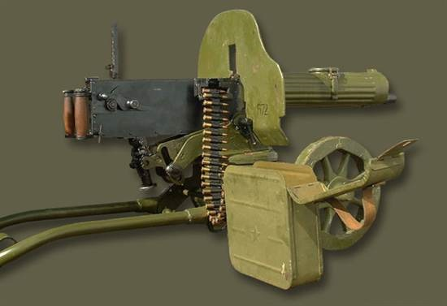
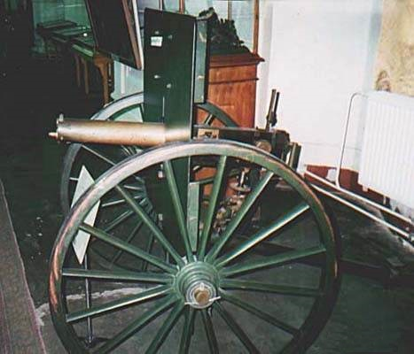
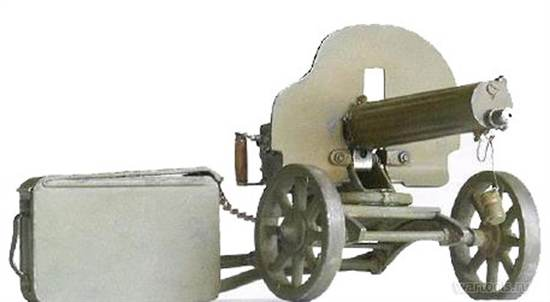
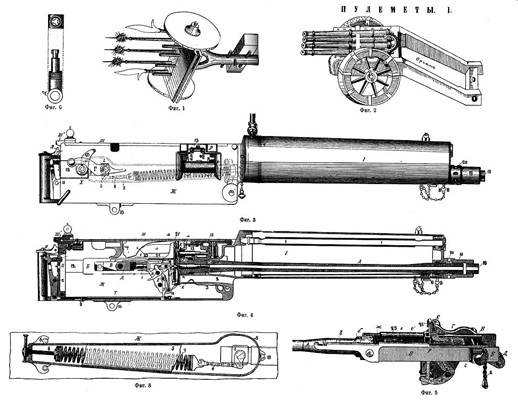
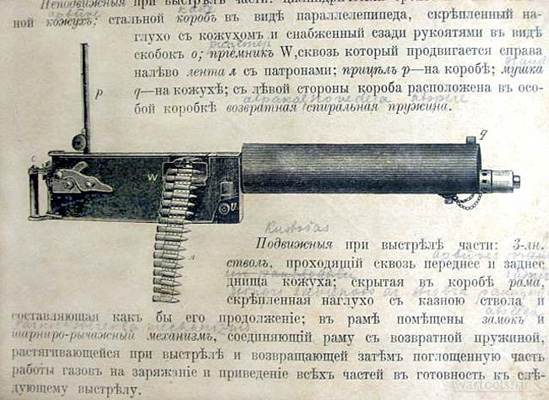
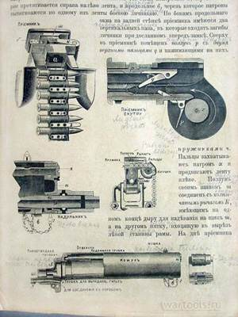
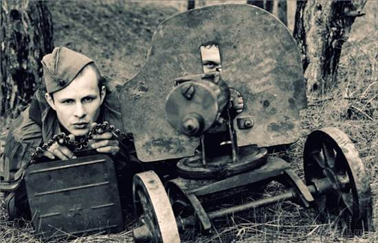
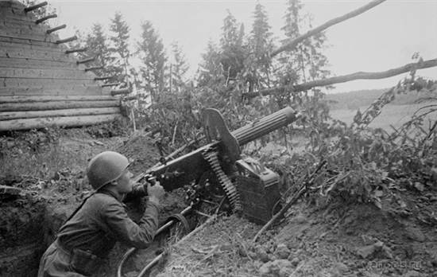
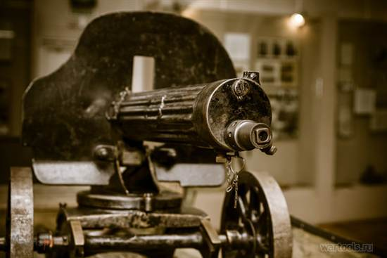
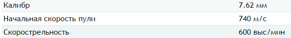

Пулемёт «Максим» образца 1910 года
Станковый пулемёт, модификация британского пулемёта Максима, широко эксплуатировавшийся российской и советской армиями в ходе Первой мировой и Второй мировой войны. Пулемёт «Максим» применялся для уничтожения открытых групповых целей и огневых средств противника на расстоянии до 1000 м.

История
После успешной демонстрации пулемёта в Швейцарии, Италии и Австро-Венгрии Хайрем Максим прибыл в Россию с показательным образцом пулемёта .45 калибра (11,43 мм).
В 1887 году прошли испытания пулемёта Максима под 10,67-мм патрон винтовки Бердана с дымным порохом.
8 марта 1888 года из него стрелял сам император Александр III. После испытаний, представители русского военного ведомства заказали Максиму 12 пулемётов обр. 1895 года под 10,67-мм патрон винтовки Бердана.
Поставлять пулемёты Максима в Россию начало предприятие «Vickers, Sons & Maxim». Пулемёты были доставлены в Санкт-Петербург в мае 1899 года. Новым оружием заинтересовался и российский военный флот, он заказал ещё два пулемёта для проведения испытаний.
В дальнейшем винтовка Бердана была снята с вооружения, и пулемёты Максима были переделаны под 7,62-мм патрон русской винтовки Мосина. В 1891—1892 гг. для испытаний были приобретены пять пулемётов под патрон 7,62х54 мм.
Для повышения надёжности работы автоматики 7,62-мм пулемёта в конструкцию был введён «дульный ускоритель» — устройство, предназначенное для использования энергии пороховых газов, чтобы увеличить силу отдачи. Передняя часть ствола была утолщена для увеличения площади дульного среза а затем к водному кожуху был присоединён колпачок-надульник. Давление пороховых газов между дульным срезом и колпачком действовало на дульный срез ствола, толкая его обратно и помогая ему быстрее откатываться назад.
В 1901 году 7,62-мм пулемёт Максима на колёсном лафете английского образца был принят на вооружение сухопутных войск, в течение этого года в русскую армию поступило первые 40 пулемётов Максима. В течении 1897—1904 годов был закуплен 291 пулемёт.
Пулемёт (масса которого на тяжёлом лафете с большими колёсами и большим бронещитом составляла 244 кг) отнесли в подчинение к артиллерии. Пулемёты планировалось применять для обороны крепостей, для отражения огнём с заранее оборудованных и защищённых позиций массированных атак пехоты противника.

Этот подход может вызвать недоумение: ещё в ходе франко-прусской войны французские митральезы, применённые на артиллерийский манер, то есть батареями, были подавлены прусским контрартиллерийским огнём ввиду очевидного превосходства артиллерии над малокалиберным оружием по дальнобойности.
В марте 1904 года был заключён контракт о производстве пулемётов Максима на Тульском оружейном заводе. Стоимость производства тульского пулемёта (942 рубля + 80 фунтов стерлингов комиссионного вознаграждения фирме «Виккерс», всего около 1700 рублей) была дешевле, чем стоимость приобретения у англичан (2288 рублей 20 копеек за пулемёт). В мае 1904 года на Тульском оружейном заводе стартовало серийное производство пулемётов.
В самом начале 1909 года Главное артиллерийское управление объявило конкурс на модернизацию пулемёта, в итоге которого в августе 1910 года на вооружение был принят модифицированный вариант пулемёта: 7,62-мм пулемёт Максима образца 1910 года, прошедший модернизацию на Тульском оружейном заводе под руководством мастеров И. А. Пастухова, И. А. Судакова и П. П. Третьякова. Был уменьшен вес тела пулемёта и изменены некоторые детали: ряд деталей из бронзы заменили на стальные, прицельные приспособления изменили для соответствия баллистике патрона с остроконечной пулей обр. 1908 года, изменили приёмник, чтобы он подходил под новый патрон, плюс к тому же расширили отверстие втулки надульника. Английский колёсный лафет был заменён на облегченный колёсный станок А. А. Соколова, броневой щит английского образца — на бронещит уменьшенных размеров. Кроме того, А. А. Соколов создал патронные коробки, двуколку для перевозки патронов, герметичные цилиндры для ящиков с патронами.

Пулемёт Максима обр. 1910 года со станком весил 62,66 кг (а вместе с жидкостью, заливаемой в кожух для охлаждения ствола — примерно 70 кг).
Конструкция
Автоматика пулемёта работает на принципе использования отдачи ствола.

Устройство пулемёта Максима: ствол покрыт снаружи тонким слоем меди для предохранения от ржавчины. На ствол надет кожух, наполняемый водой для охлаждения ствола. Вода наливается по трубке, соединенной с кожухом патрубком с краном. Для слива воды служит отверстие, закрытое навинчивающейся пробкой. В кожухе есть пароотводная труба, по которой из него выходит пар при стрельбе через отверстие в дульной части (закрыто пробкой). На трубку надета короткая, подвижная трубка. При углах возвышения она опускается и закрывает нижнее отверстие трубки, вследствие чего вода не может попасть в эту последнюю, а пар, скопившийся в верхней части кожуха, будет входить через верхнее отверстие в трубку и затем выйдет по трубке наружу. При углах склонения произойдет обратное.

Боевое применение
Применение в Великой Отечественной войне

Пулемёт Максима активно использовался в Великой Отечественной войне. Он находился на вооружении пехотных и горнострелковых войск, пограничников, флота, устанавливался на бронепоезда, джипы «Виллис» и ГАЗ-64.
В мае 1942 года в соответствии с приказом наркома вооружения СССР Д. Ф. Устинова был объявлен конкурс на создание новой конструкции станкового пулемёта для РККА (на замену пулемёта Максима обр.1910/30 г.

15 мая 1943 года на вооружение РККА был принят станковый пулемёт системы Горюнова СГ-43 с воздушной системой охлаждения ствола, который начал поступать в войска в июне 1943 года. Но пулемёт Максима продолжал выпускаться до конца войны на Тульском и Ижевском заводах, и до её завершения он был основным станковым пулемётом Советской Армии.
ТТХ
-Масса, кг: 20,3 (тело), 64,3 (со станком)
-Длина, мм: 1067
-Длина ствола, мм: 721
-Патрон: 7,62х54 мм R
-Принципы работы: отдача ствола, кривошипно-шатунное запирание
-Скорострельность, выстрелов/мин: 600
-Начальная скорость пули, м/с: 740
-Вид боепитания: холщёвая или металлическая патронная лента на 250

